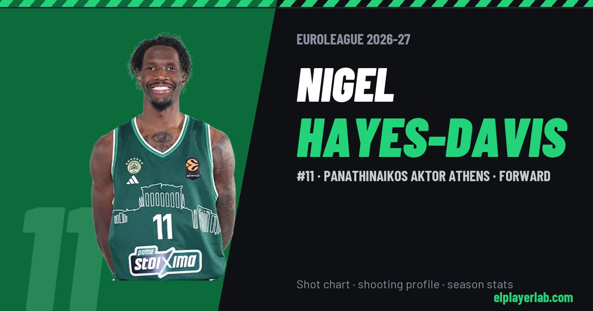

Panathinaikos AKTOR Athens · Euroleague 2026-27
Nigel Hayes-Davis
#11 · Forward · Panathinaikos AKTOR Athens · 2026-27 · shot chart, shooting profile and season stats

- Number
- 11
- Position
- Forward
- Height
- 203 cm
- Weight
- 103 kg
- Born
- 1994-12-16
- Country
- United States of America
Career
- Panathinaikos 2026-2027
- Phoenix Suns (NBA) 2025-2026
- Fenerbahçe 2022-2025
- FC Barcelona 2021-2022
- Žalgiris Kaunas 2019-2021
- Galatasaray 2018-2019
- Sacramento Kings (NBA) 2017-2018
- Raptors 905 (loan) 2018
- Toronto Raptors (NBA) 2017-2018
- Los Angeles Lakers (NBA) 2017-2018
- Westchester Knicks 2017-2018
- Wisconsin (NCAA) 2013-2017
Euroleague Player Lab: shot charts, shooting profiles and season stats for every player, rebuilt after every game.